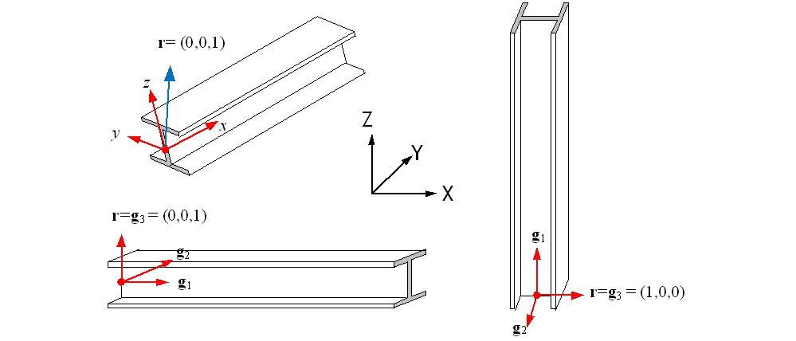
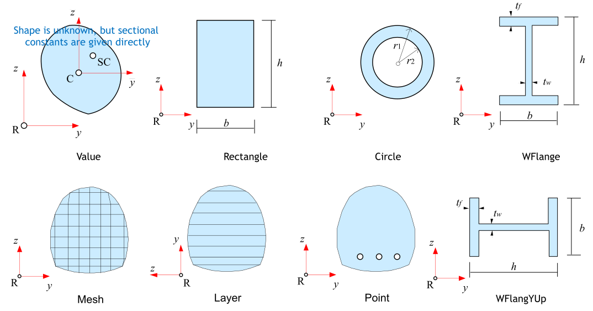
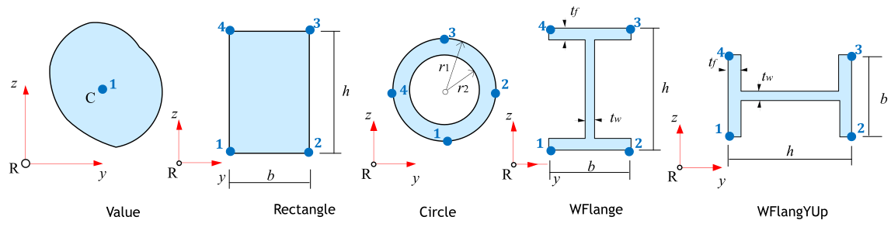

Beam
The beam element is a structural element that transmits axial force, bending, and torsion, with its dimension along the longitudinal axis (x-axis in the ECS) being larger compared to other directions. The element type, cross-section, and distribution are as follows:
■ Element Type
- B2D2H: 2-dimensional 2-node, Bernoulli beam (Hermitian shape function used)
- B2D2MH: 2-dimensional 2-node, Timoshenko beam (Modified Hermitian shape function used)
- B3D2H: 3-dimensional 2-node, Bernoulli beam (Hermitian shape function used)
- B3D2MH: 3-dimensional 2-node, Timoshenko beam (Modified Hermitian shape function used)
■ Element Cross-Section
- Beam: Beam element cross-section. Composed of one or more Cells.
■ Element-Specific Properties (Distribution)
- BeamCS: Defines the ECS for the 3D beam element.
- BeamEndRelease: Applies hinge conditions (moment release) at the element ends. Combination of Rx1, Ry1, Rz1, Rx2, Ry2, and Rz2. For example, Rz1|Rz2.
The B2D2H and B3D2H elements, which ignore shear deformation, support nonlinear material models and can simulate variable cross-sections. On the other hand, the B2D2MH and B3D2MH elements, which consider shear deformation, are applicable only for elastic materials. Since variable cross-section formulation is theoretically not possible, when cross-sectional properties are given as a variable cross-section, an average value is applied within the element.
The ECS of a 2D beam element is defined as the x-axis (member axis) and the y-axis perpendicular to it, as shown in Figure 4.2-1 below.

Fig. 4.2-1. 2D Beam Element ECS
For 3D beam elements, while the x-axis can be defined as the member axis, the y and z axes are determined by the reference vector r and an additional section rotation angle θ. Figure 4.2-2 below shows an example where the ECS is set with a section rotation angle θ=0. The default value of the r vector is set to r = (0,0,1), as shown in Figure 4.2-3. Exceptionally, when the member axis is parallel to the global coordinate system's Z-axis, the value of r is set to (1,0,0). Parallelism is determined when the member axis is within a slope of 1:100 (approximately 0.573 degrees) relative to the Z-axis.
The ECS can be further defined using a rotated coordinate system based on the section rotation angle θ from the r vector. The default value of θ is 0.

Fig. 4.2-2. 3D Beam Element ECS

Fig. 4.2-3. Default Reference Vector
In Hyfeast, the reference axis of the beam element is defined based on the line segment connecting the nodes, and it does not need to coincide with the centroid. However, the formulation is performed at the centroid. In particular, section forces and deformations are calculated with reference to the centroid, so caution is required.
The cross-section of the beam element, referred to as the Beam cross-section, is defined as a set of Cells that represent a geometric shape to which the same material is applied. The figure below shows the available Cells.

Fig. 4.2-4. Cell in Beam Section (viewed from the local +z direction)
The following is a summary of items related to cells:
- If the cross-section consists of a single cell, it is a homogeneous beam cross-section. If it consists of two or more cells, it is a composite beam cross-section.
- When configuring a beam cross-section with two or more cells, there are restrictions depending on the type of cell used.
- Value, Rectangle, Circle, WFlange, and WFlangeYUp cells only allow elastic material (IsoElasticity) and can only output stress (S), strain (E), and temperature (T) at a few predefined material points, as shown in Figure 4.2-6.
- Point, Layer, and Mesh cells can be used with both elastic and inelastic materials.
- Point cells can output the field values of the used materials, such as stress (S) and strain (E), at all material points that constitute the cell.
- Layer cells can output the field values of the used materials, such as stress (S) and strain (E), at the top and bottom of each layer.
- Mesh cells predefine the material points that form the mesh using *CellMeshPoints, and these material points can be used to output field values, such as stress (S) and strain (E), for the used materials.
- Value, Rectangle, Circle, WFlange, and WFlangeYUp cells are allowed to exist independently or in combination with Point cells only. (e.g., Rectangle (OK), Rectangle+Point (OK), Rectangle+Rectangle (NG), Rectangle+Value (NG))
- Layer cells are allowed to be combined only with Layer and Point cells. (e.g., Layer (OK), Layer+Mesh (OK), Layer+Point (OK), Layer+Layer+Point (OK), Layer+Rectangle (NG))
- Mesh cells are allowed to be combined only with Mesh and Point cells. (e.g., Mesh (OK), Mesh+Mesh (OK), Mesh+Point (OK), Mesh+Mesh+Point (OK), Mesh+Rectangle (NG))
- Point cells should generally be combined with other types of cells, but they can also be used independently. (e.g., Value+Point (OK), Rectangle+Point (OK), Point (OK), Point+Point (OK))
- When a cross-section uses Point cells, the Point cells only contribute to bending and compression calculations but do not contribute to shear or torsion calculations. For example, when calculating section constants, EA and EI are calculated considering the contribution of the Point cells, but GJ and GAs are not considered. (EA, EIy, EIz, EIyz)
- Layer cells are only applicable to 2D beam elements (B2D2H, B2D2MH).

Fig. 4.2-5. Output points in elastic cell (viewed from the local +z direction)
Example
*Material, TYPE=IsoElasticity, Name=mat
200E6, 0.3
*Section, Type=Beam, Name=value1
*Cell, Type=Value, Mat=mat
0.1, 0.442, 0.442, 0., 0.12, , 0.1, 0.1, 0.5,0.5 # a, Iy, Iz, Iyz, J, Asy, Asz, ys, zs, yc, zc
*Section, Type=Beam Name=value2, Taper=Group, Mass=Lumped
*Cell, Type=Value, Mat=mat
0.1, 0.442, 0.442, 0., 0.12, , 0.1, 0.1, 0.5,0.5 # a, Iy, Iz, Iyz, J, Asy, Asz, ys, zs, yc, zc
0.2, 0.642, 0.442, 0., 0.12, , 0.1, 0.1, 0.5,0.5
*Section, Type=Beam, Name=rect1
*Cell, Type=Rectangle, Mat=mat
20, 30 # b, h, yc,zc
*Section, Type=Beam, Name=rect2, Taper=Group
*Cell, Type=Rectangle, Type=mat
20, 30 # b, h, yc,zc
20, 50 # b, h, yc,zc
*Section, Type=Beam, Name=circle1
*Cell, Type=Circle, Mat=mat
3 # outerR, innerR, yc, zc
*Section, Type=Beam, Name=circle2
*Cell, Type=Circle, Mat=mat
3, 2.5 # outerR, innerR, yc, zc
*Section, Type=Beam, Name=circle3, Taper=Group
*Cell, Type=Circle, Mat=mat
3, 2.5 # outerR, innerR, yc, zc
4, 3.5
*Section, Type=Beam, Name=wflagne1
*Cell, Type=WFlange, Mat=mat
20, 30, 2, 1, 2,3 # b, h, tf, tw, yc, zc
*Section, Type=Beam, Name=wflage2, Taper=Element
*Cell, Type=WFlange, Mat=mat
20, 30, 2, 1, 2,3 # b, h, tf, tw, yc, zc
30, 40, 2, 1, 2,3
*Section, Type=Beam, Name=BoxGirder
*CellMeshPoint
1, 0,0
2, 1,0
3, 4,1
4, 4,5
*Cell, Type=Mesh, Mat=mat
1, 2, 3, 4
*Section, Type=Beam, Name=BoxGirder
*CellMeshPoint
1, 0,0
2, 1,0
3, 4,1
4, 4,5
..
*Cell, Type=Mesh, Mat=mat
1, 2, 3, 4,5 6, 7, 8, 9
*Section, Type=Beam, Name=RC
*Cell, Type=Mesh,Rectangle, Mat=mat
10, 20, 4,4
*Section, Type=Beam, Name=RC
*Cell, Type=Rectangle, Mat=mat
10, 20
*Cell, Type=Point, Mat=rebar
1, 10, 20, 100
2, 1, 2, 1
*Section, Type=Beam, Name=sec
*Cell, Type=Point, Mat=steel
1, 1, 0, 10. # pointId, z, y, area
2, 1, 5, 10.
3, 1, 4, 12
*Cell, Type=LAYER, Mat=steel
0, 10 # y, b (pointId is assumed 1-based consecutive index)
2, 10
2, 3 # 높이차가 없으면 null layer
3, 3
*Section, Type=Beam, Name=sec, Shear=torsion
*CellMeshPoint
1,0,0 # pointId, z, y (pointId should be 1-based, but non-consecutive)
2,1,0
3,2,0
4,0,1
5,1,0
6,2,0
*Cell, Type=Mesh, Mat=steel
1,2,3 # n1,n2,n3 # elementId is assumed 1-based consecutive index
3,4,1
4,2,3,4,1 # n1, n2, n3, n4
4,3,4,5,1
*Section, Type=Beam, Name=2, Shear=200, 20, 20 # GJ, GAsy, GAsz
*Cell, Type=Layer,Stack, Mat=steel
0, 10 # y0, b0{, y0, b0}
1, 10, 1 # y1, b1, n1
1, 3, 0
10,1, 9
10,10, 0
11,10,1
*Cell, Type=Layer,Circle, Mat=steel
10, 9, 0, 1, 9 # outerR, innerR, yc, nOuterR, nInnerR
*Cell, Type=Point,Circle, Mat=steel, StartId=201, N=10
5, 1.6, 0, 0, 0, 10 # r, a, angle, yc, zc, npoints{, ToDirectForm}
*Element, TYPE=B2D2H
2D 2-Node Bernoulli Beam Element
*Element, Type=B2D2H, ELSet=elset
id, n1, n2, [, S=section, R=beamEndRelease]
...
Specifications
- No. of nodes: 2
- No. of gauss points: 4 (Gauss-Lobatto rule used)
- Fields: BSF=[Nx Mz Vy], BSE=[Ex Kz Gxy], BST=[T0 Tz] at Gauss point about centroid. Uniaxial model response at each layer of Gauss point
- Compatible section: Beam
- Active DOFs: X,Y,RZ
The Bernoulli beam element assumes zero shear deformation, meaning that shear forces are not defined as state variables and must be calculated using equilibrium conditions. In this formulation, the cross-sectional shear deformation is always zero, and \(\small V_y=–dM_z/dx\) is used to calculate the shear force.
\(\small V_y\) is computed by first interpolating \(\small M_z(x)\) using a polynomial based on the moment response at the integration points, and then differentiating \(\small M_z(x)\) to obtain \(\small V_y\).
The beamEndRelease option allows combinations of Rx1, Ry1, Rx2, and Ry2 (Rx1 and Ry1 correspond to the two rotations at the start node, and Rx2 and Ry2 correspond to the two rotations at the end node). For example, Ry1|Ry2.
*Element, TYPE=B3D2H
3D 2-Node Bernoulli Beam Element
*Element, Type=B3D2H, ELSet=elset
id, n1, n2, [, S=section, CS=beamCS, R=beamEndRelease]
...
Specifications
- No. of nodes: 2
- No. of gauss points: 4 (Gauss-Lobatto rule used)
- Fields: BSF=[Nx My Mz Vy Vz T], BSE=[Ex Ky Kz Gxy Gxz Hx], BST=[T0 Ty Tz] at Gauss point about centroid. Uniaxial model response at each layer of Gauss point
- Compatible section: Beam
- Active DOFs: X, Y, Z, RX, RY, RZ
If the Bernoulli beam element assumes zero shear deformation, shear forces are not defined as state variables and must be calculated using equilibrium conditions. In this formulation, cross-sectional shear deformations \(\gamma_y\) and \(\gamma_z\) are always zero, and shear forces are calculated as follows:
\(\small V_y = –dM_z/dx, \quad V_z = dM_y/dx\)
\(\small V_y\) is computed by first interpolating \(\small M_z(x)\) using a polynomial based on the moment response at the integration points, and then differentiating \(\small M_z(x)\) to obtain \(\small V_y\). \(Hx\) represents \(\small d\theta / dx\).
The beamEndRelease option allows combinations of Rx1, Ry1, Rz1, Rx2, Ry2, and Rz2 (Rx1, Ry1, and Rz1 correspond to the three rotations at the start node, and Rx2, Ry2, and Rz2 correspond to the three rotations at the end node). For example, Rz1|Rz2.
*Element, TYPE=B2D2MH
2D 2-Node Timoshenko Beam Element
*Element, Type=B2D2MH, ELSet=elset
id, n1, n2, [, S=section, R=beamEndRelease]
...
Specifications
- No. of nodes: 2
- No. of gauss points: 4 (Gauss-Lobatto rule used)
- Fields: BSF=[Nx Mz Vy], BSE=[Ex Kz Gxy], BST=[T0 Tz] at Gauss point about centroid
- Compatible section: Beam
- Active DOFs: X, Y, RZ
The beamEndRelease option allows combinations of Rx1, Ry1, Rx2, and Ry2 (Rx1 and Ry1 correspond to the two rotations at the start node, and Rx2 and Ry2 correspond to the two rotations at the end node). For example, Ry1|Ry2.
*Element, TYPE=B3D2MH
3D 2-Node Timoshenko Beam Element
*Element, Type=B3D2MH, ELSet=elset
id, n1, n2, [, S=section, CS=beamCS, R=beamEndRelease]
...
Specifications
- No. of nodes: 2
- No. of gauss points: 4 (Gauss-Lobatto rule used)
- Fields: BSF=[Nx My Mz Vy Vz T], BSE=[Ex Ky Kz Gxy Gxz Hx], BST=[T0 Ty Tz] at Gauss point about centroid
- Compatible section: Beam
- Active DOFs: X, Y, Z, RX, RY, RZ
Hx represents \(\small d\theta/dx\).
The beamEndRelease option allows combinations of Rx1, Ry1, Rz1, Rx2, Ry2, and Rz2 (Rx1, Ry1, and Rz1 correspond to the three rotations at the start node, and Rx2, Ry2, and Rz2 correspond to the three rotations at the end node). For example, Rz1|Rz2.
*Section, TYPE=Beam
보 단면을 정의
*Section, Type=Beam, Name=name, Taper=Group|Element, Mass=Consistent|Lumped
*CellMeshPoint
...
*Cell, Type=Rectangle|Circle|WFlage|WFlangeYUp|Mesh|Layer|Point, Mat=mat
...
*ShearTorsionMaterial
...
Keyword line
- Name=name: Section name(required).
- Taper=Group|Element: Variable cross-section beam designation. Group treats connected beam elements as a group and assigns a variable cross-section, and Element assigns a variable cross-section for individual elements. If not specified, it means a constant cross-section beam (Optional, default None).
- Mass={Consistent|Lumped}: Consistent or Lumped, which means consistent mass or lumped mass, respectively. (Optional, default Consistent)
Sub-keywords
- *CellMeshPoint: Specifies the coordinates of points used when defining
*Cell, Type=Mesh. - *Cell, Type=..., Mat=mat: Defines a cell within the cross-section.
matindicates the material used.- Value: Specifies the cross-sectional constants as values;
matmust be linearly elastic. - Rectangle: Rectangular cross-section;
matmust be linearly elastic. - Circle: Circular or hollow circular cross-section;
matmust be linearly elastic. - WFlange: WFlange cross-section;
matmust be linearly elastic. - WFlangeYUp: WFlange cros-section with its height oriented along the local y-direction.;
matmust be linearly elastic. - Mesh: Arbitrary cross-section given as a mesh. Cross-sectional constants are calculated using 2D finite element analysis.
- Layer: Arbitrary cross-section given as a layer (only applicable to 2D beam elements).
- Point: Point-shaped cell. Used for rebar modeling, etc.
- Value: Specifies the cross-sectional constants as values;
- *ShearTorsionMaterial: Specifies reference materials for shear and torsion behavior using uniaxial material model.
*CellMeshPoint
Specifies the coordinates of points used when defining *Cell, Type=Mesh.
*CellMeshPoint
pointId, y, z, {y, z}
...
First dataline and subsequent datalines
- pointId: 아이디
- y, z, {y, z}: Point coordinates; if two are given, it indicates a constant cross-section, and if four are given, it indicates a variable cross-section.
*Cell
보요소 단면내 형상 및 재료 등을 정의
*Cell, Type=..., Mat=mat, ...
...
Keyword line
- Type=...: Type of the Cell
- Value: Specifies cross-sectional constants as values
- Rectangle: Rectangular cross-section
- Circle: Circular or hollow circular cross-section
- WFlange: WFlange cross-section
- WFlangeYUp: WFlange cros-section with its height oriented along the local y-direction.;
matmust be linearly elastic. - Mesh: Arbitrary cross-section given as a mesh. Cross-sectional constants are calculated using 2D finite element analysis.
- Layer: Layered cross-section that can be used only for 2D beams
- Point: Point-shaped cell. Used for rebar modeling, etc.
- Mat=mat: Material used in the Cell
*Cell, Type=Value
Defines the shape and material within the cross-section of the beam element.
*Cell, Type=Value, Mat=mat
A, Iy, Iz, Iyz, J, Asy, Asz, ys, zs, yc, zc
...add the above line if tapered section
First dataline
- A: Area
- Iy: 2nd moment of inertia about y w.r.t centroid(optional, default 0.)
- Iz: 2nd moment of inertia about z w.r.t centroid(optional, default 0.)
- Iyz: Cross product w.r.t centroid(optional, default 0.)
- J: torsional constant w.r.t centroid(optional, default 0.)
- Asy,Asz: Shear area (optional, default 0.)
- ys,zs: Shear centers w.r.t centroid(optional, default 0.)
- yc,zc: centroid w.r.t reference axes(optional, default 0.)
2nd dataline
- Repeat if tapered section
The material applied to *Cell, Type=Value must always be an elastic material defined as *Material, TYPE=IsoElasticity. *Cell, Type=Value is used either independently or in combination with *Cell, TYPE=Point. When combined with a Point cell, only the constants for bending are adjusted and used as the overall composite cross-sectional constants.
For variable cross-section beams, the cross-sectional constants are interpolated along the length as follows.
Here, the interpolation orders for \(\small I_y\), \(\small I_z\), and \(\small I_{yz}\) are set as \(\small m_y=2, m_z=2, m_{yz}=1\). The remaining shapes are interpolated for the cross-sectional constants based on the given shapes.
*Cell, Type=Rectangle
Rectangular cross-section shape – Applicable to elastic materials only.
*Cell, Type=Rectangle, Mat=mat
b, h, yc, zc
{b, h, yc, zc}
First dataline
- b: width (in y axis) (required)
- h: height (in z axis) (required)
- yc,zc: center w.r.t reference node (optional, default 0,0)
2nd dataline
- Repeat if tapered section
The material applied to *Cell, Type=Rectangle must always be an elastic material defined as *Material, TYPE=IsoElasticity. *Cell, Type=Rectangle is used either independently or in combination with *Cell, TYPE=Point. When combined with a Point cell, only the constants for bending are adjusted and used as the overall composite cross-sectional constants.
The cross-sectional constants for the centroid are calculated using the following equations.
*Cell, Type=Circle
Circular or hollow circular cross-section shape – Applicable to elastic materials only.
*Cell, Type=Circle, Mat=mat
outerR, innerR, yc, zc
{outerR, innerR, yc, zc}
First dataline
- outerR: outer radious (required)
- innerR: inner radius (optional, default 0,0)
- yc,zc: center w.r.t reference node (optional, default 0,0)
2nd dataline
- Repeat if tapered section
The material applied to *Cell, Type=Circle must always be an elastic material defined as *Material, TYPE=IsoElasticity. *Cell, Type=Circle is used either independently or in combination with *Cell, TYPE=Point. When combined with a Point cell, only the constants for bending are adjusted and used as the overall composite cross-sectional constants.
The cross-sectional constants are calculated using the following equations.
- Centroid w.r.t reference axes should be given
- Note that typical value of solid circle, \(\small k_s = 0\), but Cowper(1966)’s formula in case of \(\small \nu = 0\) is used here.
*Cell, Type=WFlange
WFlange cross-section shape – Applicable to elastic materials only.
*Cell, Type=WFlange, Mat=mat
b, h, tw, tf, yc, zc
...add the above line if tapered section
First dataline
- b: width(required)
- h: height(required)
- tw: thickness of web(required)
- tf: thickness of flagne(required)
- yc,zc: centroid w.r.t reference axes(optional, default 0.)
2nd dataline
- Repeat if tapered section
The material applied to *Cell, Type=WFlange must always be an elastic material defined as *Material, TYPE=IsoElasticity. *Cell, Type=WFlange is used either independently or in combination with *Cell, TYPE=Point. When combined with a Point cell, only the constants for bending are adjusted and used as the overall composite cross-sectional constants.
The cross-sectional constants are calculated using the following equations. The cross-sectional constants are based on the thin-walled theory. Therefore, they may differ slightly from those of *Cell, Type=Mesh, WFlange, which is based on solid theory.
*Cell, Type=WFlangeYUp
A WFlange section with its height oriented along the local y-direction. – Applicable to elastic materials only.
*Cell, Type=WFlangeYUp, Mat=mat
b, h, tw, tf, yc, zc
...add the above line if tapered section
First dataline
- b: width(required)
- h: height(required)
- tw: thickness of web(required)
- tf: thickness of flagne(required)
- yc,zc: centroid w.r.t reference axes(optional, default 0.)
2nd dataline
- Repeat if tapered section
*Cell, Type=WFlangeYUp defines a section whose height is aligned with the y-axis. It can be interpreted as a 90-degree rotated version of the *Cell, Type=WFlange. This is particularly useful for 2D beam elements (such as B2D2H and B2D2MH) where the user cannot define the local coordinate system.
*Cell, Type=Mesh
Cell with an area divided into a mesh.
*Cell, Type=Mesh, Mat=mat
p1,p2,p3{,p4} # If p4 is not given, T3 element used
...
Unlike *Cell, Type=Layer and *Cell, Type=Point, *Cell, Type=Mesh uses pointIds specified in *CellMeshPoint. These pointIds are used when assigning result values.
Keyword line
- Mat=mat: material(required)
First dataline and subsequent datalines
- p1, p2, p3{, p4}: pointIds defined in *CellMeshPoint. If 3 points are given, it is used as T3, and if 4 points are given, it is used as Q4 for finite element analysis.
*Cell, Type=Layer
Divides the area into layers. Used for defining 2D beam cross-sections.
*Cell, Type=Layer, Mat=mat
pointId, y, b, {y, b}
...
Keyword line
- Mat=mat: material(required)
First dataline and subsequent datalines
- pointId: point id (required)
- y: y coordinate
- b: width
The y values must increase continuously. If y1 and y2 are given in two consecutive rows, they must satisfy y1 <= y2.
On the other hand, pointId is used to specify the position of the result and does not need to be in consecutive order.
*Cell, Type=Point
Defines an area as a set of points with an associated area.
*Cell, Type=Point, Mat=mat
pointId, y, z, area, {y2, z2, area2}
...
Keyword line
- Mat=mat: material(required)
First dataline and subsequent datalines
- pointId: point id (required)
- y,z: y,z coordinates (required)
- area: area (required)
- y2,z2: y,z coordinates for right end in taper section (required if taper)
- area2: area for right end in taper section (required if taper)
The pointId used when defining *Cell, TYPE=Point is used to specify the position of the result.
*Cell, Type=Mesh, Rectangle
Creates a rectangular mesh.
*Cell, Type=Mesh, Rectangle, Mat=mat
b, h, yc, zc, nb, nh, ToDirectForm
b, h, yc, zc
First dataline
- b: width (in y axis) (required)
- h: height (in z axis) (required)
- yc,zc: center w.r.t reference node (optional, default 0,0)
- nb,nh: No. of mesh divisions in width and height when used in Beam section
- ToDirectForm: If it exists, the cell command is converted to the normal *Cell, TYPE=Mesh.
2nd dataline
- Repeat if tapered section for b, h, yc, zc
*Cell, Type=Mesh, Circle
Creates a circular mesh.
*Cell, Type=Mesh, Circle, Mat=mat
outerR, innerR, yc, zc, nseg, ToDirectForm
outerR, innerR, yc, zc
First dataline
- outerR: outer radious (required)
- innerR: inner radius (optional, default 0,0)
- yc,zc: center w.r.t reference node (optional, default 0,0)
- nseg: No. of segments in the perimeter of quarter outer circle. If nseg is less than 4, 4 is used. (optioanl, default 0)
- ToDirectForm: If it exists, the cell command is converted to the normal *Cell, TYPE=Mesh.
2nd dataline
- _Repeat if tapered section for outerR, innerR, yc, zc
*Cell, Type=Mesh, WFlange
Creates a WFlange-shaped mesh.
*Cell, Type=Mesh, WFlange, Mat=mat
b, h, tw, tf, yc, zc, ToDirectForm
b, h, tw, tf, yc, zc
First dataline
- b: width(required)
- h: height(required)
- tw: thickness of web(required)
- tf: thickness of flagne(required)
- yc,zc: centroid w.r.t reference axes(optional, default 0.)
- ToDirectForm: If it exists, the cell command is converted to the normal *Cell, TYPE=Mesh.
2nd dataline
- Repeat if tapered section for b, h, tw, tf, yc, zc
*Cell, Type=Layer, Stack
Creates a stacked Layer.
# Pismatic seciton
*Cell, Type=Layer,Stack, Mat=mat
y0, b0, ToDirectForm
y1, b1, n1
...
yn, bn, nn
# Taper section
*Cell, Type=Layer,Stack, Mat=mat
y0, b0, y0, b0, ToDirectForm
y1, b1, y1, b1, n1
...
yn, bn, yn, bn, nn
Keyword line
- Mat=mat: material(required)
- MaxSize=maxSize: maximum layer height (optional)
- StartId=startId: staring cell point id (default 1, optional)
First dataline
- y0,b0{, ToDirectForm}: y coordinate and width for For prismatic seciton. If “ToDirectForm” exists, the cell command is converted to the normal *Cell, TYPE=Layer.
- y0,b0, y0, b0{, ToDirectForm}: y coordinate and b width for For taper seciton. The first pair of y0, b0 indicates start section, and the second pair of y0, b0 indicated end section. If “ToDirectForm” exists, the cell command is converted to the normal *Cell, TYPE=Layer.
2nd dataline
- yn,bn, yn, bn, nn: y coordinate and b width for For taper seciton. The first pair of y0, b0 indicates start section, and the second pair of y0, b0 indicated end section. nn is the number of layers from n-1 to n.
*Cell, Type=Layer, Circle
Creates a Layer for a circle.
*Cell, Type=Layer,Circle, Mat=mat
outerR, innerR, yc, nOuterR, nInnerR, ToDirectForm
outerR, innerR, yc
First dataline
- outerR,innerR: outer and inner radius (outerR is required, but innerR is optional(default 0.)
- yc: y coordinate of center w.r.t reference node (optional, default 0.)
- nOuterR,nInnerR: No. of layers for outer radius and inner radius. If innerR is zero, nInnerR is neglected. If innerR is nonzero, nOuterR is the number of layers for the shell,i.e. the portion of outerR-innerR. (optional. default 4,4)
- ToDirectForm: If it exists, the cell command is converted to the normal *Cell, TYPE=Layer
2nd dataline
- Repeat if tapered section for outerR, innerR, yc
If the 3D MeshedBeam cross-section does not explicitly specify shear-related constants, a 2D finite element analysis for a potential problem is performed by default to determine the torsional constant, shear correction factor, and shear center.
*Cell, Type=Point, Circle
Creates circular Point patterns.
*Cell, Type=Point,Circle, Mat=mat
r, a, angle, yc, zc, npoints{, ToDirectForm}
{r, a, angle, yc, zc }
First dataline
- r: radius (required)
- a: area of each point (required)
- angle: counter-clockwise angle from y-axis of the starting layer (required)
- yc, zc: center coordinate of circle w.r.t reference node (required)
- npoints: No. of points (required)
- ToDirectForm: If it exists, the cell command is converted to the normal *Cell, TYPE=Point
2nd dataline
- Repeat if tapered section for r, a, angle, yc, zc
*ShearTorsionMaterial
Specifies reference materials for shear and torsion behavior using uniaxial material model.
*ShearTorsionMaterial
ShearX|ShearY|Torsion, material, referenceUnitSystem
...
First dataline and subsequent datalines if neccessary
- ShearX|ShearY|Torsion: Specified type. ShearX and ShearY correspond to shear behavior in two orthogonal directions, while Torsion refers to torsional behavior.
- material: Referenced material model. Only uniaxial material models are allowed. Interpreted as a scaled shear force–shear strain relationship for shear, or as a scaled torsional moment–rotation relationship for torsion. The actual shear force or torsional moment is computed by multiplying the scaled quantity by the corresponding section stiffness constants—GAsy, GAsz, or GJ—defined in the section.
- referenceUnitSystem: Unit system of the referenced material model. Optional; defaults to the current unit system.
Shear and torsional behavior in beam elements is linear by default. To enforce nonlinear behavior, a uniaxial material model can be referenced to define a scaled shear force–shear strain or scaled torsional moment–rotation relationship. The resulting actual shear force and torsional moment are obtained by multiplying the scaled response by the corresponding section constants (GAsy, GAsz, or GJ).
When used for shear behavior, if the referenceUnitSystem and the current unit system defined in *Environment, TYPE=UnitSystem are the same, the scaled shear force and stress are converted on a 1:1 basis without physical interpretation. If the unit systems differ, internal scaling is applied appropriately. Similarly, for torsional behavior, the scaled torsional moment and stress, and the rotation and strain, are internally converted based on the unit systems, without implying direct physical meaning. For more details, refer to the material command documentation.
ChatGPT에게 묻기